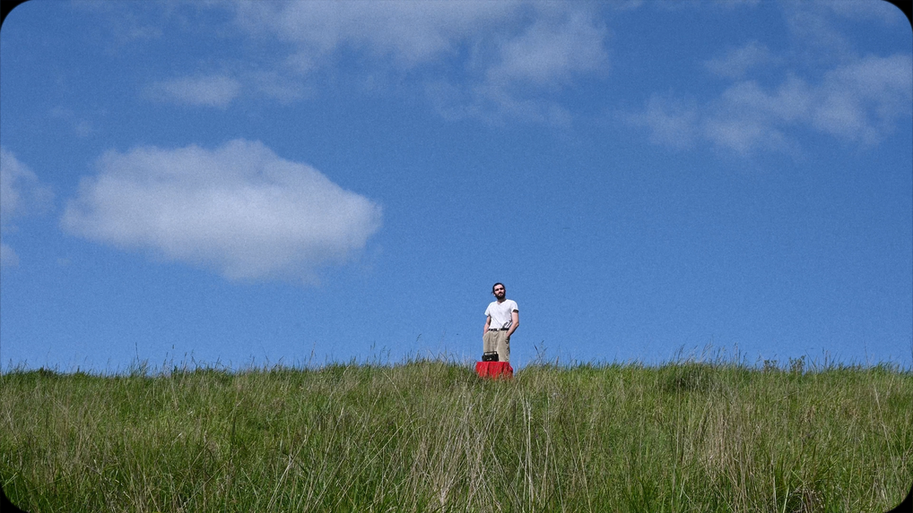
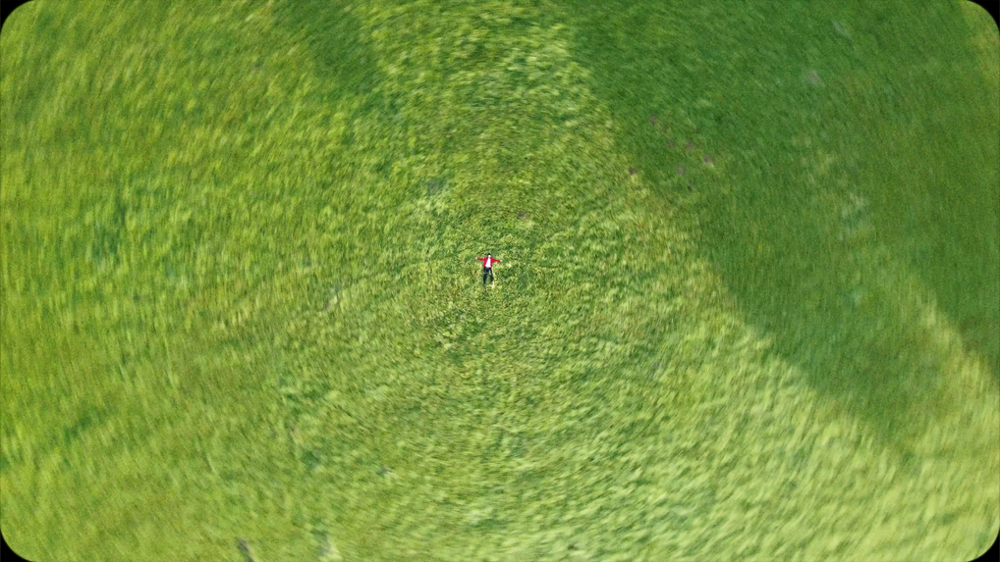
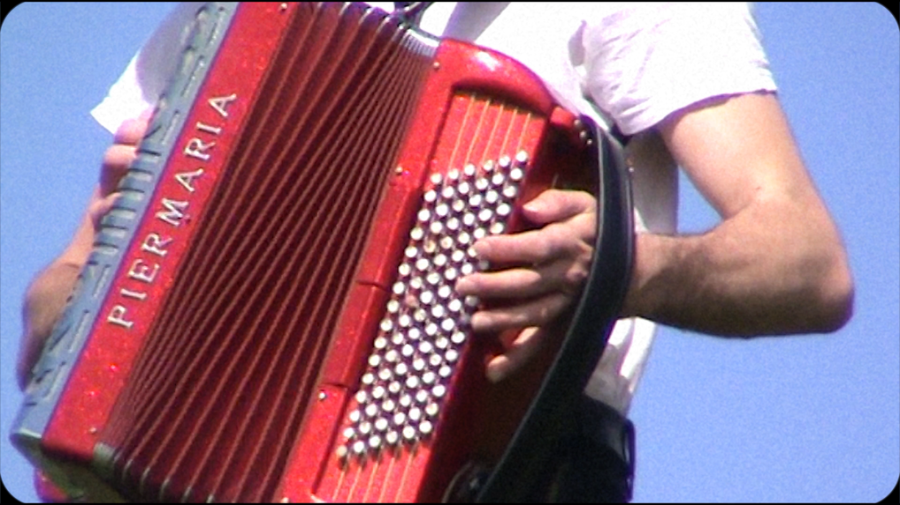
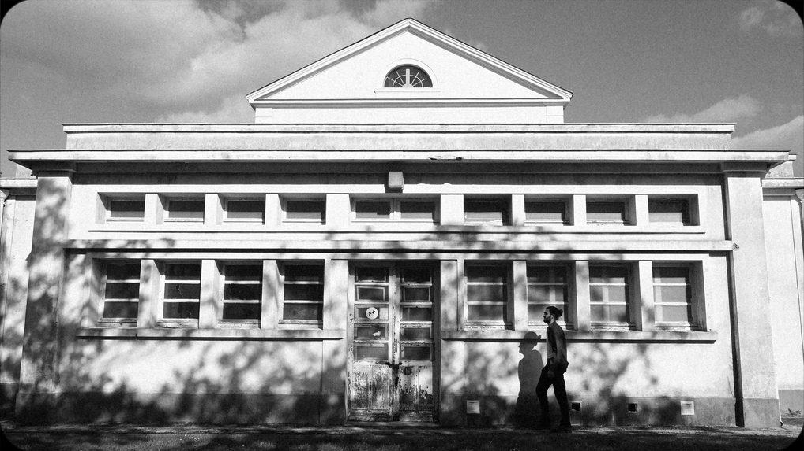

Jean-jour
← retour
Court-métrage réalisé dans le cadre du concours des 24h des réalisations 2024 organisé par le cinéma les cinéastes du Mans. Prix coup de cœur 2024 Réalisé par Simon Nay et Marius Chudeau (20/04/2024=
   